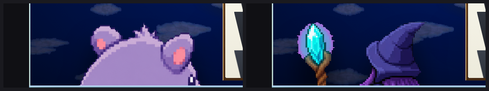
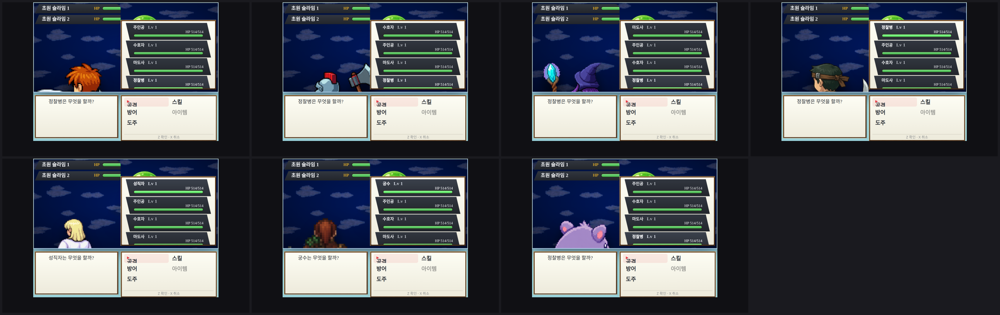

아군 뒷모습 배틀러 작업 보고서
전투 화면에서 우리 편 6명이 전부 같은 그림을 쓰고 있었습니다. 이제 각자 자기 뒷모습을 갖습니다.
세 줄 요약
- 완료주인공 6명의 뒷모습 그림을 새로 만들고 게임에 연결했습니다.
- 기존 문제포켓몬 스킨에서는 아군이 너무 크게 그려져 머리만 보입니다. 제 작업 이전부터 그랬습니다.
- 확인관련 테스트 51개 통과. 새로 깨진 건 없습니다.
1. 무엇이 문제였나
전투에서 우리 편은 등을 보이고 섭니다. 그런데 그 뒷모습 그림이 딱 한 장밖에 없었습니다. 그래서 6명 전원이 똑같은 보라색 생물로 보였습니다. 앞모습은 각자 다른데 뒷모습만 같으니, 누가 누군지 구분이 안 됐습니다.

2. 새로 만든 그림
6명분 뒷모습을 만들었습니다. 각 그림은 712×712 픽셀이고, 앞모습과 같은 사람으로 보이게 머리색, 옷, 무기를 맞췄습니다. 시선도 오른쪽 위(적이 있는 쪽)를 보도록 그림 자체에 넣었습니다.


그림 파일 위치: public/assets/generated/battle-skins/sprites/hero-0N-back.png

3. 앞뒤가 같은 사람인지
뒷모습만 예뻐도 소용이 없습니다. 앞모습과 같은 사람으로 보여야 합니다. 그래서 앞모습 시트와 나란히 놓고 비교했습니다.


144×384(48px 칸 3열 8행)이고 그중 5칸만 씁니다.
4. 실제 게임 화면
여기서 문제가 하나 보입니다. 그림 자체는 잘 붙었는데, 너무 크게 그려집니다. 아래 두 장을 비교해 보세요. 왼쪽이 예전(공용 그림), 오른쪽이 지금(주인공 전용 그림)입니다. 둘 다 화면 밖으로 넘쳐서 머리만 보입니다.


중요한 건 두 장이 똑같이 잘려 있다는 점입니다. 제가 그림을 바꿔서 커진 게 아니라, 원래부터 이만큼 커져 있었습니다. 바뀐 건 "누구인지"뿐이고, 크기 문제는 그대로 남아 있습니다.
이게 그림 탓이 아니라 포켓몬 스킨 탓이라는 건 다른 스킨을 켜 보면 바로 드러납니다. 같은 코드, 같은 인물, 스킨만 RM식으로 바꾼 화면입니다.

왜 커지나 — 숨 쉬는 애니메이션이 원인입니다
누군가 이미 이 문제를 고쳤습니다. 18-pokemon-layout-redesign.css 41번째 줄은
크기를 키우지 않습니다. 주석에도 "이중 scale 제거"라고 적혀 있습니다.
그런데 아군이 가만히 있을 때 숨 쉬듯 위아래로 움직이는 애니메이션이 하나 있습니다.
그 애니메이션이 옛날 크기 값을 그대로 들고 있습니다
(17-sprint-a-polish.css 30~33번째 줄).
@keyframes battle-idle-breath-pokemon-actor {
0%, 100% { transform: translate(-50%, -55%) scale(2.45); }
50% { transform: translate(-50%, -55%) scale(2.45) translateY(-6px); }
}
CSS에서는 애니메이션이 일반 규칙보다 셉니다. 그래서 애니메이션이 도는 순간
고쳐 놓은 41번째 줄이 무시되고 옛날 값 scale(2.45)가 살아납니다.
이 애니메이션은 "무엇을 할까?" 명령을 고르는 동안 계속 돕니다.
QA 스크린샷이 전부 그 순간을 찍었으니, 전부 커진 상태로 남았습니다.
145px × 2.45 × 1.5(스테이지) ≈ 533px → 필드는 468px에서 잘림
크기 말고 위치도 틀어집니다. -55%는 발밑이 아니라 몸 가운데를 기준점으로 잡아서,
커질 때 위아래로 같이 번집니다. 제대로 된 예는 _rm2003.css인데,
거기서는 scale(1.25)에 transform-origin: 50% 100%를 짝지어
발이 바닥에 붙어 있습니다.
적도 같은 문제가 있습니다. 25~28번째 줄의 적 애니메이션이 scale(1.28)을
되살립니다. 그래서 스크린샷 위쪽에 초원 슬라임이 초록색 띠처럼 조금만 보입니다.
코드를 건드리지 않고 확인하는 방법도 있습니다. 35~40번째 줄이
prefers-reduced-motion: reduce일 때 애니메이션을 끄게 해 뒀습니다.
그 설정을 켜면 크기가 정상으로 돌아옵니다.


5. 코드에서 바뀐 것
핵심은 "아군 뒷모습을 그릴 때 그 배우 전용 그림이 있으면 그걸 먼저 쓴다"입니다. 없으면 예전 공용 그림으로 돌아갑니다.
| 파일 | 한 일 |
|---|---|
src/player/battleFieldDom.ts | 배우별 뒷모습 그림을 찾아 붙입니다. 못 찾으면 예전 그림으로 돌아갑니다. |
src/battle/battlePose.ts | 자세를 시트의 몇 번째 칸으로 읽을지 정하는 계산. |
src/assets/generatedAssetManifest.ts | 새 그림 6장을 자산 목록에 등록. |
defaultDatabasePartyRecords.ts | 성직자와 궁수가 남의 시트를 돌려 쓰던 걸 끊고 자기 시트(hero-05/06)를 줬습니다. |
modernNocturneGame.ts | 데모가 기본 DB에서 적을 건져 쓰던 방식을 버리고 자기 적 2종을 직접 갖게 했습니다. |
defaultDatabaseBattleRecords.ts | 스탯이 규칙적으로 증가하는 더미 적 레코드 231건을 기본 DB에서 제거. |
새로 쓴 테스트
backBattlerGazeContract.test.ts— 뒷모습이 적 방향을 보는지battleFieldAllySprite.test.ts— 아군 슬롯이 배우별 그림을 집어오는지battlerPoseFrame.test.ts— 자세 칸 계산이 맞는지spriteProcess.test.ts— 그림 후처리(배경 제거, 자르기)가 맞는지
6. 남은 문제
세 가지가 남아 있습니다. 모두 제 작업 전부터 있던 문제이고, 각각 확인했습니다.
1포켓몬 스킨 아군·적이 너무 큼
위 4번에서 본 문제입니다. 예전 공용 그림도 똑같이 잘려 있어서, 이번 작업과 무관한 기존 상태입니다.
고칠 자리는 좁습니다 — 17-sprint-a-polish.css의 애니메이션 두 블록에서
옛날 크기 값을 떼면 됩니다.
- 30~33번째 줄(아군):
scale(2.45)제거,-55%→-100% - 25~28번째 줄(적):
scale(1.28)제거
다만 그것만 고쳐도 끝이 아닙니다. 그림 크기를 두 파일이 다르게 말합니다 —
18-pokemon-layout-redesign.css는 205×215를 원하는데
_battlers.css가 !important로 145×140을 밀어붙여 이깁니다.
애니메이션만 고치면 원래 의도한 크기보다 작게 나옵니다.
어느 쪽 숫자가 맞는지는 연출 판단이라 제가 정하지 않았습니다.
이 애니메이션 값을 지키는 테스트는 없습니다. test/ 아래에
battle-idle-breath나 2.45를 확인하는 코드가 없어서 그냥 통과했습니다.
2테스트 3개 실패
시작 파티가 4명이어야 하는데 2명으로 나오고, 적 그림 하나(리프링)가 연결되지 않습니다. 제 변경을 전부 치우고 원래 코드에서 돌려도 똑같은 3개가 똑같이 실패합니다. 즉 제가 깨뜨린 게 아닙니다.
defaultDatabase.test.ts— 시작 파티 4명 기대, 실제 2명 (2건)dbImageMatching.test.ts— 리프링 적 그림 연결 없음 (1건)
3npm run typecheck 실패
tsconfig.json이 쓰는 baseUrl 옵션이 지금 TypeScript에서 없어졌습니다(TS5102, TS5090).
이것도 원래 코드에서 그대로 재현됩니다. 범위 밖이라 손대지 않았습니다.
7. 테스트 결과
| 항목 | 결과 |
|---|---|
| 통과 | 51 |
| 실패 | 3 (전부 기존 실패) |
| 이번 작업이 새로 깨뜨린 것 | 0 |
확인용 화면은 verify-shots/back-battler-qa/, 그림 모음은
reports/actor-battle-sprites/에 있습니다. 커밋은 아직 하지 않았습니다.